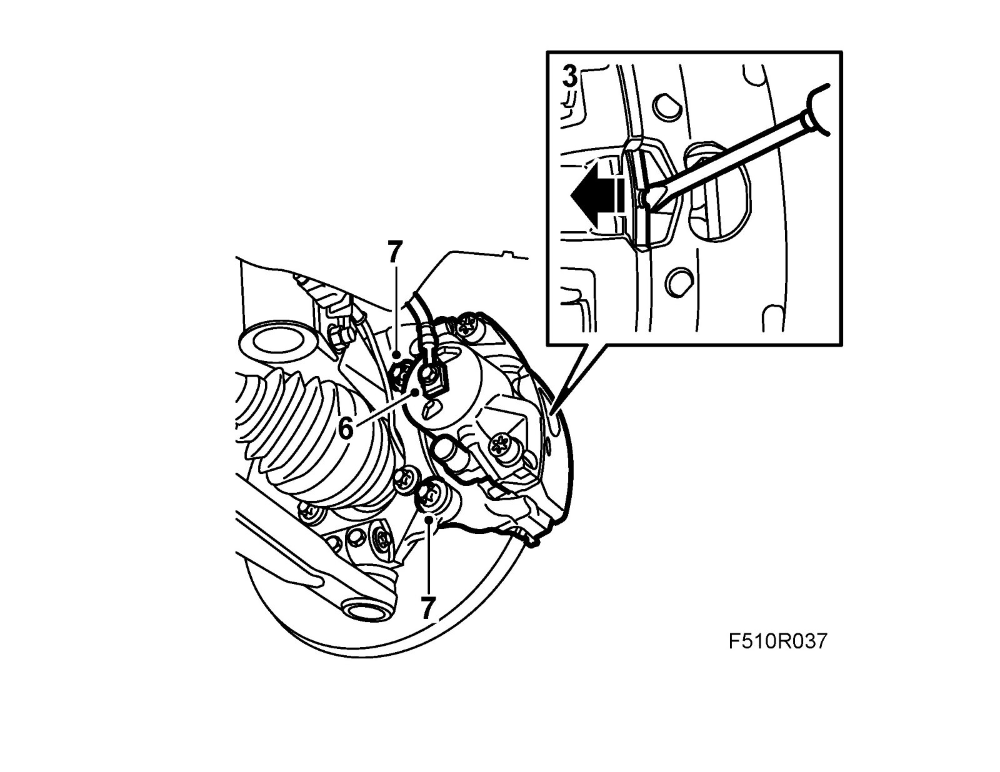
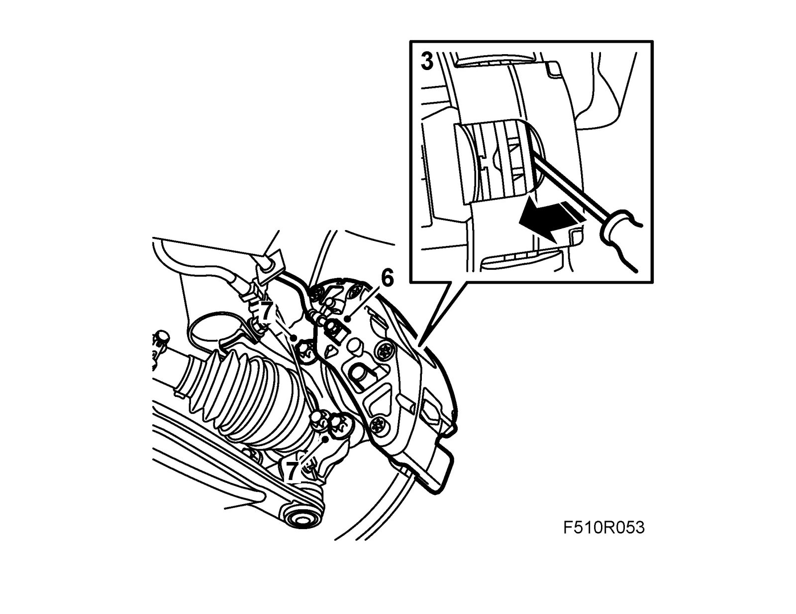
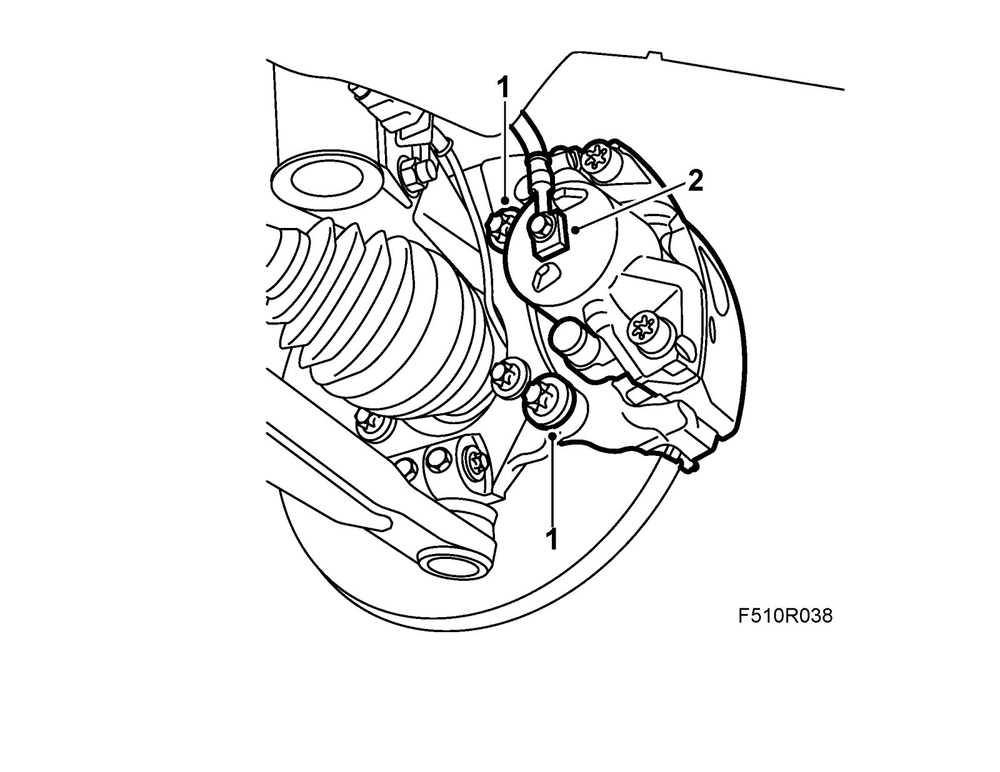

Brake Caliper, Front
Brake caliper, frontTo remove
1. Raise the car.
2. Remove the wheel.
3. Press in the piston.
- Levels 1, 2 and 4: Press against the brake pad with a screwdriver.

- Level 3: Press between the brake disc and the brake caliper using a screwdriver.

4. Depress the brake pedal slightly using a brake pedal clamp.
5. Remove fuse 6 from instrument panel electrical centre 22.
6. Detach the brake hose. Plug the hose and the caliper.
7. Remove the brake caliper retaining bolts and lift of the caliper.
To fit
1. Fit the brake caliper. Secure with 74 96 268 Nut lock.
Tightening torque 210 Nm +30° Nm (155 lbf ft +30°)

2. Fit the brake hose with new seals.
Tightening torque: 40 Nm (30 lbf ft)
3. Remove the brake pedal clamp and refit fuse 6 in the instrument panel electrical centre 22.
4. Bleed the brake system.
5. Fit the wheel.
6. Lower the car.
7. Depress the brake pedal repeatedly in order to press out the brake pistons.
8. Check the brake fluid level, adjust if necessary. Technical data, brake fluid.